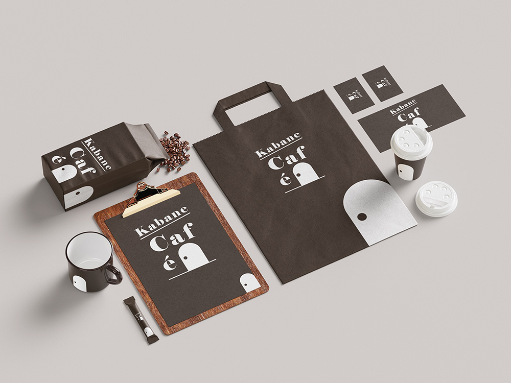
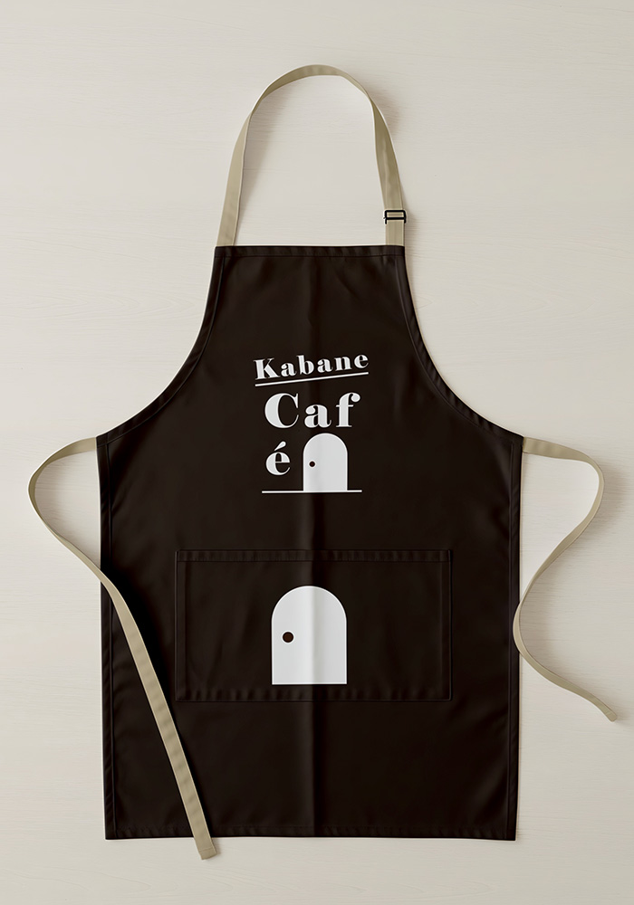
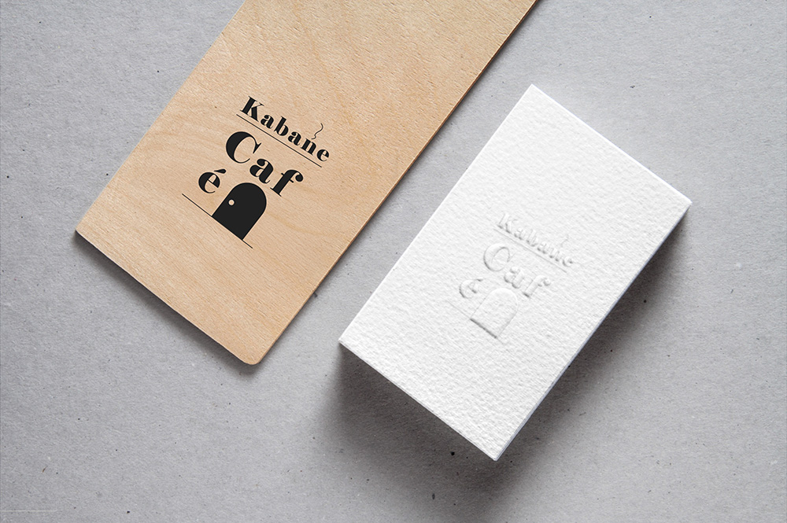
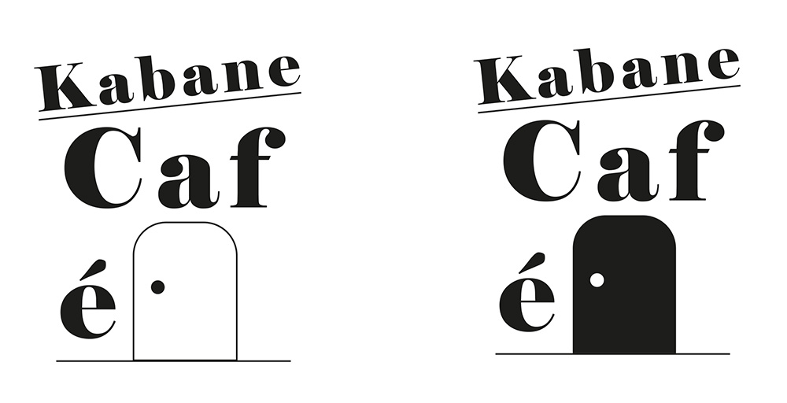

Commande fictive d’un café parisien, dont le thème est: la cabane. Volonté de retranscrire un environnement agréable et confortable par le logotype tout en mettant en avant sa particularité (présence d’une cabane sur les lieux). La création est passée dans un premier temps par le dessin, puis par la création du logotype choisi sur Illustrator et enfin par la réalisation de mockups sur Photoshop.
IDENTITÉE VISUELLE
KABANE CAFÉ



